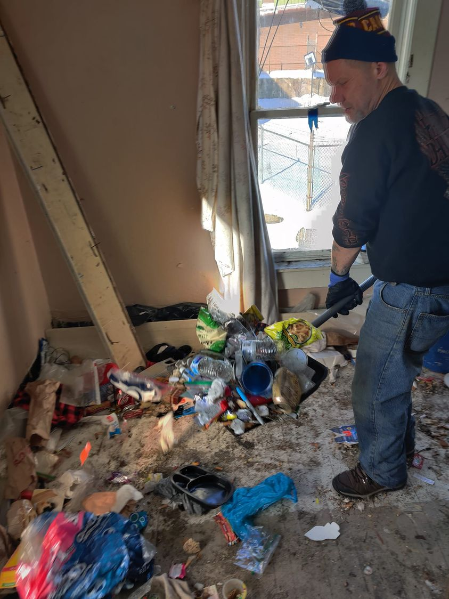

Mobile uploads
There are some powerful conservations going on at Akron City Council about inhumane living conditions at many apartment buildings in Akron. Roaches, mice and rats are a common complaint.
As is always the case, the full story is incredibly complicated. The Houseless Movement house currently has roaches.
IN NO WAY, am I making excuses. We've also had rats in the past.
This picture is of a man using a snow shovel to clean out a room of a person who has just left our house.
The man who moved out refused to use a trash can. He threw all his trash on the floor. (I literally could not even pay him to clean his room. And he LOVES making money.) He also often didn't use the bathroom. He peed in bottles and didn't throw them out.
My belief is that there are people who are not a good fit for a traditional house or apartment building. A tiny house or tent is a better fit. A tiny house can be broomed out in about 10 minutes. And a tent turns into a garbage bag that can all just be thrown away.
AND MOST IMPORTANTLY, a tent or tiny house keeps people physically separated so that bugs and rodents can't infect an entire building.